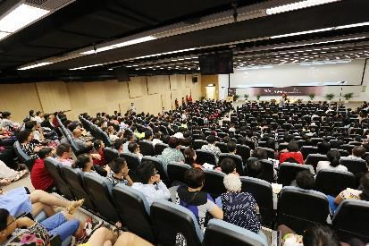
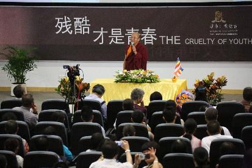
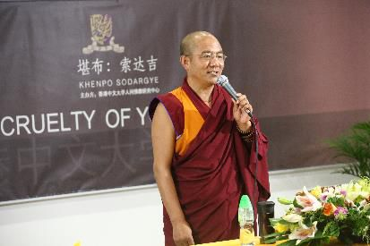

残酷才是青春——香港中文大学演讲
『2014年8月6日』
主持人：
在座的各位朋友，以及正在收看网络直播的各界朋友，大家晚上好。非常感谢大家远道而来参与此次聚会，也非常感谢嘉宾们一直以来对我们研讨会的支持，谢谢大家！
下面有请香港中文大学人间佛教研究中心主任学愚教授上台致辞。
学愚教授：
尊敬的索达吉堪布，各位法师、居士，各位来宾，大家来自五湖四海，今天缘聚香港中文大学，这种机会非常非常难得。
佛教讲缘起，香港中文大学与索达吉堪布结缘在五年前，当时我们邀请堪布到中文大学参加学术研讨会。从那时起，堪布每次来香港弘法，我们都会邀请他到中文大学作演讲，而每次的讲座都吸引四面八方的听众，非常轰动，比如这次就有很多从东北、北京专程赶来聆听讲座的朋友。
本来今天要介绍一下堪布的，但是我想，在座不认识堪布的可能极少，所以下面还是把更多的时间留给堪布，希望堪布给我们多一些智慧的开示，我想这也是大家的共同心愿。
请大家以热烈的掌声有请堪布——

我最初与香港中文大学的老师、同学结上善缘，确实如学愚教授所说。以那时的缘起，后来我在香港其他很多学校也作过演讲，世界青年佛学研讨会也在香港举办过多次。所以，就我个人而言，确实与这里有很好的缘分。
一、青春真的残酷吗？
美好的背后
今天在座的，有一部分是佛学爱好者，有一部分是世界青年佛学研讨会的老师和学生，另外则主要是中文大学的学子，今天我们一起探讨的话题是“残酷才是青春”。
听到这个题目，很多年轻人可能会疑惑不解：“青春是美好的，为什么把它说成残酷的呢？”
对于人生的这段青春时光，确实不少人认为它是美好的、快乐的，尤其西方一些浪漫主义者常常使用各种曼妙的言辞赞美与讴歌它，现在的影视剧等很多传媒也乐于宣扬人们青春时的各种愉悦体验，比如年轻人在花园里享受惬意的时光，在家庭中品尝甜蜜的生活……
对于这些美好的情景，我们也并不否认，但是如果用佛教的智慧去观察就会发现：这些幸福的体验只是生活的片段，而并非一贯的常态，而且其背后往往隐藏着痛苦的阴影，这一分却常常被忽略了。
如同美丽的花园中常常藏匿着毒蛇，幸福的背后也往往埋伏着悲剧。悲剧没有出现时，人们没有看到它，也就不加防范；而当悲剧獠牙毕露时，很多人才惊慌失措，只有选择逃避，有些甚至陷入绝望。因此对于青春，应该一分为二地看，否则，如果一个孩子一直在“青春美好无瑕”的教育中成长，不知道青春的真相，那么一旦步入青春遭遇一点儿风吹雨打时，就会痛苦不堪、无力面对。
被错解的青春
藏传佛教中流传着这样一个故事：有个人从来没有敲过鼓，于是愚笨地认为：鼓的声音那么大，肯定非常重。有一次他见到一只鼓，就倾尽全力提起来，因为用劲过猛，鼓反而掉落在地上，发出了轰隆的巨响。他听了，不禁笑道：“原来你不过是声音很大，实际上并不重。”他一直以为鼓是实心的，不知道鼓其实是空的。
现在很多年轻或不再年轻的人，一直认为青春是完美的，无有瑕疵，这也许是一种错解，如同那个人最初对鼓的看法一样，并没有认识到真相，因为生活中确实有不少人的青春与美好无关。
我曾经问一个人：“你的青春是什么样的？”他说：“我的青春是血淋淋的，充满伤感，不堪回首。”我又问一个人：“你的青春是什么样的？”回答说：“当时觉得很美好，现在回想起来非常幼稚与愚蠢。”
所以，“残酷才是青春”可以说是给很多大学生提个醒，因为你们在心理上不一定很成熟，很多认知不一定准确。
十字路口的迷茫
18岁之前，很多人的生活比较单纯、清净，而18岁之后的一段时期内，却可能充满迷茫，缺乏自信，没有确定性。
我询问过很多大学生，发现确实是这样，他们的内心满是困惑与不安：“我所学的专业将来能不能用得上？”“我能找到满意的工作吗？”“我将来能有一个幸福的家庭吗？如果有，我能担得起责任吗？”
不仅是大学生，已经步入社会的年轻人，也会陷入迷茫的境地。就在前两天的研讨会上，有个人说自己已经大学毕业，而且成了家、有了孩子，现在一方面要养家糊口，另一方面又要应对上上下下的各种关系，沉重的压力落在肩头，真不知该如何是好。这的确说出了很多年轻人的心声，年轻人以前生活得很单纯，现在突然成了家长、部门负责人，崭新的角色使得许多人顿时不知所措。
在座的成年人和老年人已经走过了青春阶段，知道青春到底是怎样的，但很多年轻人面对青春时，确实如同站在十字路口一般，很容易迷茫。
再加上，现在的时代也非常特殊——这是一个信息爆炸又难辨是非的时代，全球各种资讯可以瞬间出现在一部小小的手机上，这一方面有其便利之处，但另一方面，面对各种眼花缭乱的产品、信息，如果缺乏冷静的思考、智慧的辨别，就会陷入迷雾之中。
今天现场有很多老师，我特别希望你们在教导学生时，除了传授专业知识，还要教会他们应对人生的本领——如何面对生活，如何担负家庭，如何回馈社会，尤其如何修养自身的道德，比如坚强的品格、贤善的心地。这种教育非常重要，能够帮助年轻人更好地走过青春。
我的青春是灰色的
曾经有记者问我：“如果用一种颜色形容你的青春，你用什么颜色？”
我想了一下，回答他：“灰色吧。”
我觉得青春如果是灰色的，就有填成各种颜色的可能，比如红色——我衣服这样的颜色，或者白色——成为一名医生，再或者是黄色——藏传佛教里通常活佛穿黄色，不过我没有想装活佛啊。（众笑）
对当时那个回答，我还是比较满意，因为读书期间我对未来确实有过很多遐想：有一次看到医生时，非常羡慕这种职业，觉得应该多学一些医学知识；又有一次看见一个领导穿着光鲜、皮鞋油亮，又想将来当领导；还有我在山上放牦牛时，也时常感叹天地那么辽阔、大自然如此美好，还是当牧民好，每天都可以在蓝天白云下无忧无虑地生活。
我当时的状态确实比较迷茫——想当医生，想当领导，想当牧民，还想出家……不过后来我走上了出家的路。之所以选了这条路，跟前世的因缘以及当时一些老师的指点有一定关系，如果完全让我自己抉择，可能只会无所适从。现在回过头看，这条路对我是比较合适的。
结合我自身的经历，我觉得很多大学生可能也处于类似的境地中。我询问过一些大学生：“你将来打算从事什么职业？”回答往往是：“我也不知道，虽然我的专业是这个，但不知道将来能不能派得上用场。”这话确实也道出了实情，所以很多学生从踏进大学校门时，就开始忧心就业的去向了。

虚耗的青春
现在世界上的大学生数量非常多，这是历史上从未有过的。但是这些学生中，有些具备真才实学，有些则只是徒有文凭，内在的智慧并不成熟。
香港的大学应该普遍很好，学生在四五年里会学到真正的本领。不过我去过的一些二三等高校，情形很不容乐观，里面的很多学生一直在浑浑噩噩中消磨时光——男生每天沉迷于上网、抽烟、喝酒，女生则忙于打扮或者也沉溺于网络。这样的学生将来如何能成为栋梁之才呢？恐怕自己的生活都难以保障。
所以，现在社会上出现了一个特殊群体——“啃老族”，指有些年轻人虽然已经走出校园，但是却赋闲在家，衣食住行的花销全部向父母索要，自己无力解决或者即便有能力也由于懒惰而不愿负担。因此，从某种意义而言，青春确实是残酷的。
如今的社会又非常功利，物质享受被大肆提倡，内心的道德无人问津，导致很多人唯利是图，把个人德行远远抛在身后。所以大家可以好好思考一下：身处这个时代，年轻人是快乐还是痛苦？
二、应对青春，你准备好了吗？
中国孩子，美国孩子
我看过这样一个故事，威斯康星一所中学里的两个孩子相约去爬山，一个是中国孩子，一个是美国孩子。
他们去游玩的这座山，因为风化常常会发生岩石坍塌。很不幸地，这两个孩子下山返回的途中遇到了坍塌，他们被困在了岩石中，美国孩子被碎石砸伤，腿骨折了，稍微动弹一下就痛彻心扉。
天慢慢黑了下来，寒冷和饥饿如同恶魔一般步步逼近。那个美国孩子开始尝试着爬出石堆，他伤腿上的血染红了整个岩石……
没有人知道这个孩子是怎么咬紧牙关爬回小镇的。他向别人冷静地讲述了遇险的地点，说那里还有一个中国孩子。当人们赶到那里找到那个中国孩子时，他因为寒冷和恐惧已经奄奄一息，如果再迟些被发现就会丧命。
故事里的美国孩子有很强的独立保护能力，而中国孩子却没有，一直在等待别人的救援。当然，这也不一定说明所有美国孩子都有这个能力，而所有中国孩子都不具备，但至少这个故事可以反映出一些现象。
大家也知道，美国孩子从小就被教导要学会独立，比如吃饭实行AA制，而且父母会告诉他们必须AA制的理由，那就是不论人生中发生什么事，没有人替你买单，就算你的至亲，也不会。而中国的很多孩子，从小就养成靠父母、靠亲友的习气，生病时也是等待别人来照顾，即使有力气也不愿意爬起来，在这种状态中很多能力就逐渐丧失了。
所以，我在这里特别想提醒为人父母者：应该重视对孩子的教育，不应当把孩子扔给保姆或老人就万事大吉了，因为由保姆或老人抚养长大的孩子，其各方面能力不一定得到很好的开发。
刚才提及的已为人父的那个人，他说打算以很好的方式培养孩子，我当时对此也很关心，不过他没有再详述。我想可能他和妻子会有一个人专门负责教育孩子。我也听说有些国家和民族里，父母特别重视对孩子的教育，认为自己在这方面负有重大责任。这种观念是合理的，有利于孩子的成长。
在教育孩子时，培养其独立生活能力是很重要的。一个人如果不具备这种能力，不必说对社会作贡献，即便自己的生活，可能也难以为继。
先对自己负责
佛经记载，古印度有一位国王叫波斯匿王，他有一次问王后茉莉夫人：“这个世界上，你最爱的人是谁？”国王满心以为茉莉夫人会说是他。
没想到茉莉夫人却回答：“我最爱的是我自己。”
国王听了有些失望，说：“你现在能享受荣华富贵，可都是我的荫庇。”
茉莉夫人说：“才不是呢！我听佛陀说这是我自己的福报。”
国王很不服气，于是设计了一些方法想要证明茉莉夫人的一切都是拜自己所赐。不过出人意料的是，结果完全证实了茉莉夫人的话，最终国王也不得不承认：确实是她自己的福报荫庇了自己。
这个故事可以说明：一个人如果拥有良善的身口意，就是最值得自己爱的人。为什么呢？因为如果行为如法，语言得体，内心也善良、诚实，就可以积累丰厚的福报，以此定能为自己营造未来的安乐。
在前段时间的辩论中，有些人说我们应该对国家负责，为国家作出贡献；有些人说我们应该对民族负责，成为对民族有用的人；有些人说我们应该对家庭负责，在家里尽到责任。但我想，每个人至少先对自己负责，如果连基本的道德品行都不具备，那么要在世间立足都十分困难，又何谈为家庭、为国家乃至为全世界作出贡献呢？
人跟动物完全不同，动物只知道寻觅饮食，除此之外就没有更高的追求了，而人不能这样，应当追求更有意义的东西。不过，现在很多人可以说跟动物有点相似，除了吃喝玩乐，再没有更高的行为，这是一种悲哀。
我常常这样想：如今的科技非常发达，原子弹等危险武器足以瞬间毁灭整个地球，但这些如果没有落入穷凶极恶者的手中，暂时还不至于把世界推入深渊，所以不是最可怕的。然而人类道德的普遍滑坡，许许多多人沉溺于金钱、地位、爱情、享受等短暂而无义的东西中，除此之外从不希求更有价值的事物，诸如心灵的提升、道德的完善，这种状况才真的令人担忧！虽然并非所有人都堕落到如此地步，但整体的趋势就是这样，可能再过十年、二十年，人类的道德会更加沦丧，状况会更加可怕。
美国黑人民权运动领袖马丁·路德·金曾说：“不是所有的人都会出名，但每个人都可以变得伟大，因为伟大是通过为他人服务而界定的。为别人提供服务……并不一定要认识柏拉图和亚里士多德，并不一定要会爱因斯坦的相对论，并不一定要了解力学第二定律。你所需要的是一颗优雅的心灵和充满爱的灵魂。”
马丁·路德·金的话确实很有道理。大家可以观察一下自己是否伟大？我认为人人都有伟大的潜质，因为人的慈悲是与生俱来的，只不过一般人的悲心比较狭隘，只是关心亲人朋友，所以还需要扩展与升华。
很多人认为大乘佛教非常伟大。确实是这样，不过大乘佛教的伟大不在于它的建筑多么辉煌，不在于它的佛像多么庄严，也不在于它的历史多么悠久，如果从这些角度观察，它不一定算得上伟大；大乘佛教之所以伟大，就在于它无私利他的精神——无条件地给予别人、帮助别人、奉献别人。
你们不一定都学过大乘佛教，也不一定都有这样的心量，但要知道这种精神非常宝贵，值得去追求。

学会过简单的生活
我接触过一些人，他们特别喜欢穿名牌衣服、吃山珍海味、用高档产品。其实不需要这样，现代人应该学会过简单的生活。
当然，如果你经济条件非常富裕，吃穿用度样样高档是你的自由，但如果能够过朴实的生活，也很好的，一件衣服穿上一二十年，吃饭尽量节约，出行安步当车。
简单的生活有很多益处，对自己而言，可以培养知足少欲心，而且珍惜了福报；对整个世界而言，也有助于解决环境、粮食等方面的危机。
很多人可能去过非洲、柬埔寨、越南等地方，那里有多少孩子没有衣服穿？有多少人没有饭吃？我们如果肆无忌惮地浪费资源，不说从宗教角度，即便从做人角度，恐怕也于心有愧。
爱因斯坦曾说：“简单淳朴的生活，无论在身体上，还是精神上，对每个人都是有益的。”对于这一点，我们自己也可以体会得到——如果对生活的要求不是很高，内心就不会背负很大的压力，很容易悠游自在。
佛经中记载，曾经释迦族有一个国王出家了，很多人听了都非常诧异：他贵为国王，居然出家了！（前段时间有些大学生出家，大家都很惊讶，其实这也没什么。）他们于是到佛陀那里询问缘由。
佛陀告诉他们：这个国王以前住在富丽堂皇的宫殿里，身边有很多保镖，但是睡觉时依然惶惶不安；如今他住在简陋的茅棚里，连门都没有，却睡得非常安详。他现在的生活虽然简单，却很快乐。
大多数在家人不可能过出家人那样特别简单的生活，但也应该尽量简化生活。
其实，现代人的很多痛苦，都是因为无法安于简单，或者说贪欲膨胀所致。包括人类的许多战争，表面看来是由嗔恨引发，但究其根源还是贪心作祟——国与国之间为什么爆发冲突？就是为了一块地盘、一处矿产等。人与人之间为什么发生矛盾，比如有些兄弟姐妹、亲戚朋友之间关系难以调和？也是源于一些利益纠纷。所以，如果能够知足少欲，这些冲突都会减少。
生活在感恩里
还有一点非常重要，就是要学会感恩。
每个人可以想一想：无论是吃一口饭、喝一口水，单凭自己的力量能不能成办？
实际上，一口饭、一口水的背后都凝聚了无数人的汗水和辛劳，甚至很多动物因此牺牲了宝贵的生命。
比如今天我们在这里交流，这个建筑肯定凝结了很多人的心血，当时有多少工人在这里辛苦地劳作；这个麦克风也蕴含了很多人的劳动，制作过程中有很多人付出了汗水。而我们没有贡献一分钱，没有付出一分劳动，现在如果认为使用它们理所当然，那么也不合理，因为并没有付出。
但现在很多学生好像不具备感恩心，似乎自己一生下来就是大学生，父母没有养育他，老师没有教导他……其实不是这样的，你走到今天，父母对你付出了多少？老师对你付出了多少？朋友对你付出了多少？乃至这个社会以及整个地球对你付出了多少？对此都应该深思。
如果你能够有一颗感恩的心，就会找到自己；如果找到了自己，也许从另一个角度，就能找得到青春的美好。
对于年轻人而言，青春也许并非如你们想象，但如果能怀着一颗坚强、善良、感恩的心，就可以平稳地走过青春，甚至收获成长与喜悦。